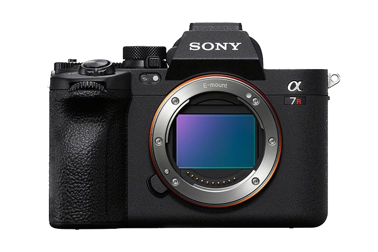
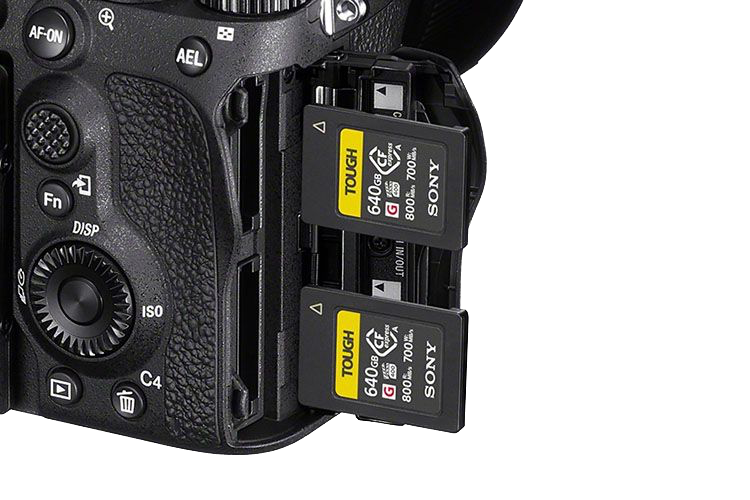
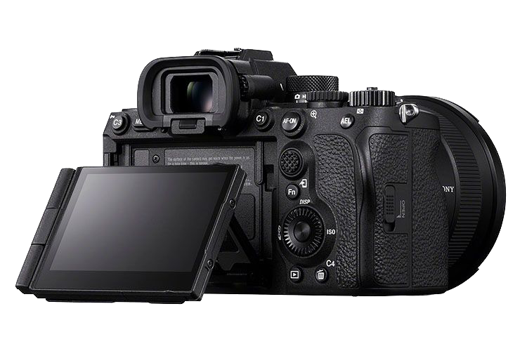
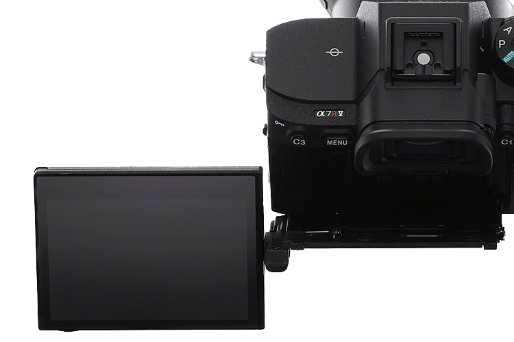

不經不覺 Sony A7R IV 推出已經有 3 年，當時是市場上最高解像度的全片幅機種。不過 3 年後的今天，剛推出的後繼機 A7R V 仍保留了 6100 萬像素解像度，甚至官方也承認是跟上一代採用同一顆感光元件，不過就採用了最新的 BionZ XR 處理器及加入全新 AI 處理器，讓這部 A7R V 不論在功能還是性能上，都有著大幅的提升。
新機雖然保留同 A7R IV 相同嘅 6100 萬像素背照式感光元件，但就改用了較上一代高 8 倍效能的 BionZ XR 處理器，可支援到 Sony 最新的觸控操作介面，也讓相機整體反應更快。另外新機加入了一顆 AI 處理器，配合 Deep Learning 技術，不單大幅提升主體偵測以及追焦能力，亦同時提高自動曝光、自動白平衡、閃燈 TTL 輸出的準確度。事實上，A7R V 在主體偵測方面仍較上一代為多，現時已經包括了人、動物、鳥、昆蟲、汽車/火車以及飛機，用家根本完全毋須擔心對不準主體。
雖然相機的解像度維持於 6,100 萬像素，而連拍速度最高仍然是 10fps，但緩衝就大幅度增加。在使用 CFexpress Type A 卡的情況下，若以純 JPEG 或 HEIF 格式拍攝，可以連拍 1000 張以上。而選擇壓縮 RAW 或非壓縮 RAW 格式，亦分別可以連拍 583 張及 135 張，正常來說是非常夠用。
拍片方面今次此機終於支援 8K 解像度，但最高只支援到 24p 或 25p。而拍攝 4K 最高亦只有 60p（兩者都會有 1.24X 的裁切）。比較特別是如果用家選用 Super 35mm 格式，4K 的影像實際上會由 6.2K 超取樣而來，影像細膩度會更高。至於 Colour Sampling 最高就有 10 bit 4:2:2，透過 HDMI 更可輸出 16 bit RAW。Colour Profile 除了 S-Log3 和 HLG，亦加入了 S-Cinetone，可以見到雖然 8K 未支援到 30p，但其實整體已經較上一代加強了很多。
新機的內置五軸防震功能亦提升至 8 級，是現時 Sony 機種中、以致全片幅相機之中最強的一部。而由 5 軸防震系統而來的 Pixel Shift 功能，今次亦可以感應到畫面的輕微變動而調節，以輸出更精細銳利的影像。說到防震，在影片模式中使用到的 Active Mode + 電子防震功能，據講其防震效果會更加好。
機身外形設計及按鍵編排整體跟 A7 IV 非常相近，但今次就改用了可上下翻動及橫向打開的設計，雖然讓機身略為加厚，但操作上就可以更貼近用家不同的需要。其他方面還有 944 萬點高解像 120fps EVF、雙記憶卡槽同時支援 CFexpress Type A 及 UHS II SD 卡、內置 FTP 功能以及 4K 直播等等，整體功能跟 A9 系甚至 A1 都不太輸蝕。
 總括來說今次這部 A7R V 雖然使用上一代 A7R IV 相同的感光元件，以至其影像質素上沒有太大的差別，但效能上就大幅度升級，讓相機的對焦速度以及反應有著顯著的提升。拍片方面更升級至拍到 8K ，操作上亦追上了 Sony 其他新機的步伐。雖然新機初出時定價比上一代提升了一點點，但考慮到效能上有大幅度的升級，對於需要用到如此高解像度的朋友來說，肯定也是值得考慮換新機的。
建議零售價：HK$29,490
本文轉載自 DCFever · @Johnolin10